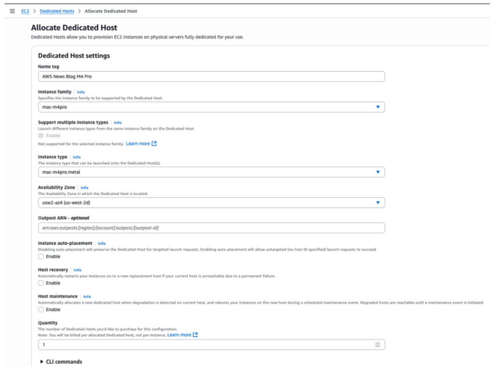
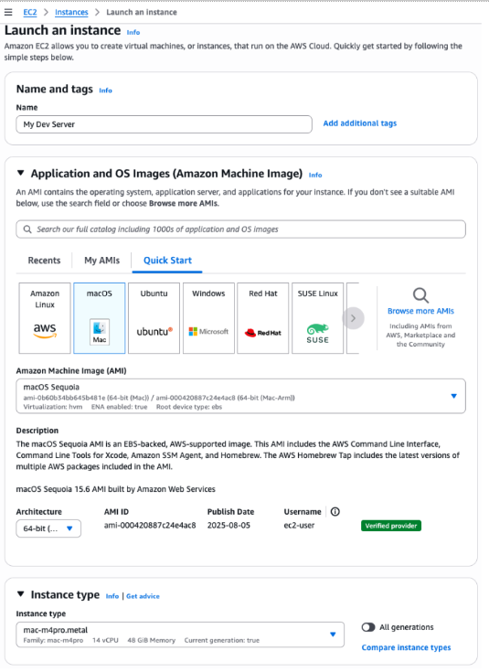
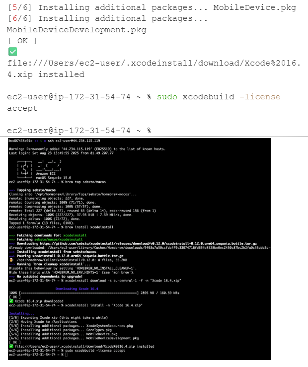

Blog 2
Thông báo Amazon EC2 M4 và M4 Pro Mac instances
Bởi Sébastien Stormacq vào ngày 12 THÁNG 9 2025 trong Amazon EC2 Mac Instances, Launch, News Permalink Comments Permalink Comments Share Voiced by Polly
Là người đã sử dụng macOS từ năm 2001 và các Amazon EC2 Mac instances từ khi chúng ra mắt 4 năm trước, tôi đã giúp nhiều khách hàng mở rộng các pipeline tích hợp & phân phối liên tục (CI/CD) trên AWS. Hôm nay, tôi rất hào hứng chia sẻ rằng các instance Amazon EC2 M4 và M4 Pro Mac hiện đã khả dụng chính thức.
Các nhóm phát triển xây ứng dụng cho các nền tảng Apple cần tài nguyên tính toán mạnh để xử lý các quy trình build phức tạp và chạy nhiều giả lập iOS cùng lúc. Khi các dự án phát triển ngày càng lớn và tinh vi, các nhóm cần hiệu năng và dung lượng bộ nhớ cao hơn để duy trì chu kỳ phát triển nhanh.
Apple M4 Mac mini làm lõi
Các instance EC2 M4 Mac (được gọi là mac-m4.metal trong API) được xây dựng dựa trên máy Apple M4 Mac mini và sử dụng AWS Nitro System. Chúng có chip Apple silicon M4 với 10 lõi CPU (bốn lõi hiệu năng và sáu lõi hiệu quả), GPU 10 lõi, Neural Engine 16 lõi, và bộ nhớ hợp nhất 24 GB, mang lại hiệu năng cải thiện cho các workload build ứng dụng iOS và macOS. Khi xây dựng và kiểm thử ứng dụng, các instance M4 Mac cho hiệu năng build ứng dụng tốt hơn tới 20% so với các instance EC2 M2 Mac.
Instance EC2 M4 Pro Mac ( mac-m4pro.metal trong API ) được trang bị chip Apple silicon M4 Pro với 14 lõi CPU, 20 lõi GPU, Neural Engine 16 lõi và bộ nhớ hợp nhất 48 GB. Những instance này cung cấp hiệu năng build ứng dụng tốt hơn tới 15% so với các instance EC2 M2 Pro Mac. Thêm dung lượng bộ nhớ và công suất tính toán cho phép chạy nhiều bài kiểm thử song song bằng nhiều giả lập thiết bị.
Mỗi instance M4 và M4 Pro Mac giờ đây đi kèm với 2 TB lưu trữ nội bộ (local storage), cung cấp lưu trữ độ trễ thấp để cải thiện caching và hiệu năng build & test.
Cả hai loại instance đều hỗ trợ macOS Sonoma phiên bản 15.6 và mới hơn như các Amazon Machine Images (AMIs). Hệ thống AWS Nitro cung cấp băng thông mạng Amazon Virtual Private Cloud (Amazon VPC) lên đến 10 Gbps và băng thông lưu trữ Amazon Elastic Block Store (Amazon EBS) 8 Gbps qua kết nối Thunderbolt tốc độ cao.
Các instance EC2 Mac tích hợp liền mạch với các dịch vụ AWS, nghĩa là bạn có thể:
-
Xây dựng pipeline CI/CD tự động sử dụng AWS CodeBuild và AWS CodePipeline
-
Lưu trữ và quản lý nhiều phiên bản bí mật build của bạn, như chứng chỉ phát triển Apple và khóa, trên AWS Secrets Manager
-
Quản lý hạ tầng phát triển của bạn bằng AWS CloudFormation
-
Giám sát hiệu năng instance với Amazon CloudWatch
Cách bắt đầu
Bạn có thể khởi chạy một instance EC2 M4 hoặc M4 Pro Mac qua AWS Management Console, AWS Command Line Interface (AWS CLI), or AWS SDKs.
Ví dụ trong demo này, tôi sẽ khởi động một instance M4 Pro từ console. Tôi đầu tiên cấp phát một dedicated host để chạy các instance của mình. Trên AWS Management Console tôi vào EC2, rồi Dedicated Hosts, và chọn Allocate Dedicated Host.
Rồi, tôi nhập tag Name và chọn Family instance (mac‑m4pro) và loại instance (mac‑m4pro.metal). Tôi chọn một Availability Zone và bỏ chọn Host maintenance.

EC2 Mac M$ – Dedicated hosts Hoặc tôi có thể dùng CLI:
aws ec2 allocate-hosts
–availability-zone-id “usw2-az4”
–auto-placement “off”
–host-recovery “off”
–host-maintenance “off”
–quantity 1
–instance-type “mac-m4pro.metal”
Sau khi host dedicated được cấp cho tài khoản của tôi, tôi chọn host vừa cấp, rồi chọn menu Actions và chọn Launch instance(s) onto host. Lưu ý console cung cấp cho bạn, bên cạnh các thông tin khác, các phiên bản macOS hỗ trợ mới nhất cho loại host này. Trong trường hợp này, là macOS 15.6.

Trên trang Launch an instance, tôi nhập Name. Tôi chọn một AMI macOS Sequoia. Tôi đảm bảo Architecture là Arm 64-bit và loại instance là mac-m4pro.metal.
Phần còn lại các tham số không đặc thù cho EC2 Mac: cấu hình mạng và lưu trữ. Khi khởi động một instance dùng cho phát triển, hãy chắc chọn volume tối thiểu 200 GB trở lên. Volume mặc định 100 GB không đủ để tải xuống và cài Xcode.

Khi đã sẵn sàng, tôi nhấn nút Launch instance màu cam ở cuối trang. Instance sẽ nhanh chóng xuất hiện ở trạng thái Running trong console. Tuy nhiên, có thể mất tới 15 phút để bạn có thể kết nối qua SSH.
Hoặc tôi có thể dùng lệnh này:
aws ec2 run-instances
–image-id “ami-000420887c24e4ac8” \ # ID AMI tùy vùng !
–instance-type “mac-m4pro.metal”
–key-name “my-ssh-key-name”
–network-interfaces ‘{“AssociatePublicIpAddress”:true,“DeviceIndex”:0,“Groups”:[“sg-0c2f1a3e01b84f3a3”]}’ \ # Security Group ID phụ thuộc config của bạn
–tag-specifications ‘{“ResourceType”:“instance”,“Tags”:[{“Key”:“Name”,“Value”:“My Dev Server”}]}’
–placement ‘{“HostId”:“h-0e984064522b4b60b”,“Tenancy”:“host”}’ \ # Host ID tùy config của bạn
–private-dns-name-options ‘{“HostnameType”:“ip-name”,“EnableResourceNameDnsARecord”:true,“EnableResourceNameDnsAAAARecord”:false}’
–count “1”
Cài Xcode từ Terminal
Sau khi instance có thể truy cập, tôi có thể kết nối bằng SSH và cài công cụ phát triển. Tôi dùng xcodeinstall để tải và cài Xcode 16.4.
Từ laptop của tôi, tôi mở session với credentials Apple developer:

Tôi kết nối với EC2 Mac instance cái mà tôi vừa mới launched. Sau đó, tôi tải và cài đặc Xcode:



Những điều cần biết
-
Chọn volume EBS tối thiểu 200 GB cho mục đích phát triển. Volume mặc định 100 GB không đủ để cài Xcode. Tôi thường chọn 500 GB. Khi tăng kích thước EBS sau khi instance đã khởi chạy, nhớ to resize the APFS filesystem.
-
Ngoài ra, bạn có thể chọn cài công cụ phát triển và framework của bạn lên ổ SSD nội bộ 2 TB độ trễ thấp có sẵn trong Mac mini. Lưu ý rằng nội dung volume này gắn với vòng đời instance, không với dedicated host. Nghĩa là mọi thứ sẽ bị xóa khỏi ổ SSD nội bộ khi bạn dừng và khởi động lại instance.
-
Các instance mac-m4.metal và mac-m4pro.metal hỗ trợ macOS Sequoia 15.6 và các phiên bản mới hơn.
-
Bạn có thể di chuyển các instance EC2 Mac hiện tại khi instance di chuyển đang chạy macOS 15 (Sequoia). Tạo một AMI tùy chỉnh từ instance hiện tại và khởi động một instance M4 hoặc M4 Pro từ AMI đó.
Cuối cùng, tôi gợi ý bạn xem các hướng dẫn tôi viết để giúp bạn bắt đầu với EC2 Mac:
-
Kết nối tới instance EC2 Mac (tôi chỉ bạn ba cách khác nhau để kết nối)
Giá cả và khả dụng
Các instance EC2 M4 và M4 Pro Mac hiện có tại US East (N. Virginia) và US West (Oregon), dự kiến mở rộng sang các vùng khác trong tương lai. Các instance EC2 Mac có thể mua dưới dạng Dedicated Hosts theo mô hình giá On-Demand và Savings Plans. Việc tính phí cho EC2 Mac là theo giây với mức tối thiểu 24 giờ cấp phát để tuân theo Thỏa thuận Bản quyền phần mềm macOS của Apple. Sau khoảng thời gian tối thiểu 24 giờ, host có thể được giải phóng bất cứ lúc nào mà không cần cam kết tiếp.
Là người làm việc chặt với các nhà phát triển Apple, tôi tò mò xem bạn sẽ dùng các instance mới này như thế nào để tăng tốc chu kỳ phát triển của bạn. Sự kết hợp giữa hiệu năng gia tăng, dung lượng bộ nhớ cải thiện và tích hợp với dịch vụ AWS mở ra nhiều khả năng mới cho các đội xây ứng dụng cho iOS, macOS, iPadOS, tvOS, watchOS, và visionOS. Ngoài phát triển ứng dụng, Neural Engine của Apple silicon khiến các instance này là ứng viên hiệu quả chi phí để chạy workload inference machine learning (ML). Tôi sẽ thảo luận chi tiết chủ đề này tại AWS re:Invent 2025, nơi tôi sẽ chia sẻ benchmark và best practices để tối ưu workload ML trên EC2 Mac.
Để tìm hiểu thêm về các instance EC2 M4 và M4 Pro Mac, bạn có thể truy cập trang Amazon EC2 Mac Instances hoặc tham khảo EC2 Mac documentation. Bạn có thể bắt đầu sử dụng các instance này ngay hôm nay để hiện đại hóa workflow phát triển Apple trên AWS.
Seb đã viết code từ khi chạm Commodore 64 giữa những năm tám mươi. Anh truyền cảm hứng cho những người xây dựng để khai phá giá trị của đám mây AWS, dùng hỗn hợp bí mật giữa đam mê, nhiệt huyết, advocacy khách hàng, tò mò và sáng tạo. Anh ta quan tâm đến kiến trúc phần mềm, công cụ dev và điện toán di động. Nếu bạn muốn bán cho anh cái gì đó, đảm bảo nó có API. Theo dõi @sebsto trên Bluesky, X, Mastodon và các nền tảng khác.